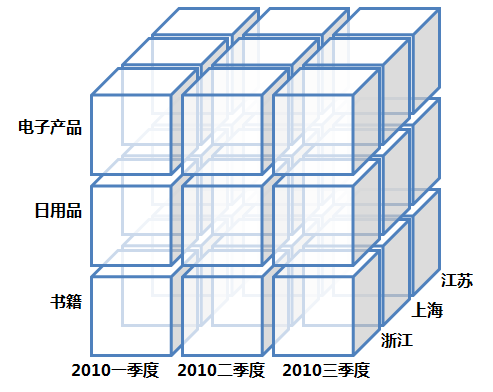
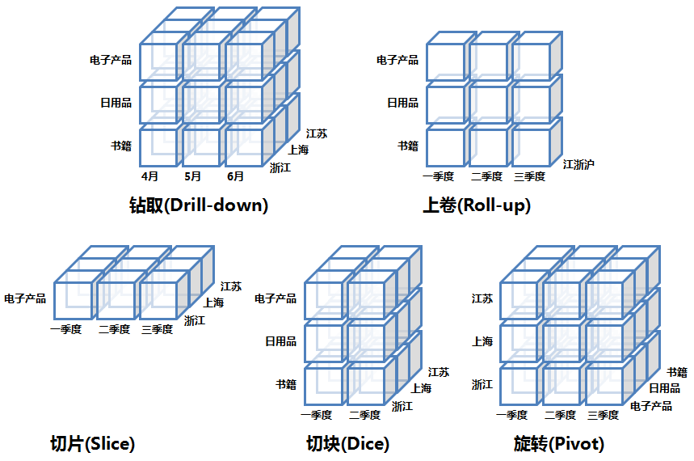

数仓基本概念
数据仓库的概念模型
星型模式(Star schema)
事实表在中心，周围围绕地连接着维表(每维一个)，事实表包含有大量数据，没有冗余。
雪花模式(Snowflake schema)
属于星型模式的变种，其中某些维表是规范化的，因而把数据进一步分解到附加表中。结果，模式图形成类似雪花的形状。
雪花模型相较于星型模型，是把维表进行了规范化。
事实星座(Fact constellations)
多个事实表共享维表，这种模式可以看作星座模式集，因此称作星系模式(galaxy schema)，或者事实星座(fact constellation)
事实星座模式是把事实间共享的维进行合并，对概念进行分层，有利于数据的汇总。
数据立方体（Data Cube）
关于数据立方体（Data Cube），这里必须注意的是数据立方体只是多维模型的一个形象的说法。立方体其本身只有三维，但多维模型不仅限于三维模型，可以组合更多的维度，但一方面是出于更方便地解释和描述，同时也是给思维成像和想象的空间；另一方面是为了与传统关系型数据库的二维表区别开来，于是就有了数据立方体的叫法。
OLAP的基本操作


钻取（Drill-down）
在维的不同层次间的变化，从上层降到下一层，或者说是将汇总数据拆分到更细节的数据，比如通过对2010年第二季度的总销售数据进行钻取来查看2010年第二季度4、5、6每个月的消费数据，如上图；当然也可以钻取浙江省来查看杭州市、宁波市、温州市……这些城市的销售数据。
上卷（Roll-up）
钻取的逆操作，即从细粒度数据向高层的聚合，如将江苏省、上海市和浙江省的销售数据进行汇总来查看江浙沪地区的销售数据，如上图。
切片（Slice）
选择维中特定的值进行分析，比如只选择电子产品的销售数据，或者2010年第二季度的数据。
切块（Dice）
选择维中特定区间的数据或者某批特定值进行分析，比如选择2010年第一季度到2010年第二季度的销售数据，或者是电子产品和日用品的销售数据。
旋转（Pivot）
即维的位置的互换，就像是二维表的行列转换，如图中通过旋转实现产品维和地域维的互换。